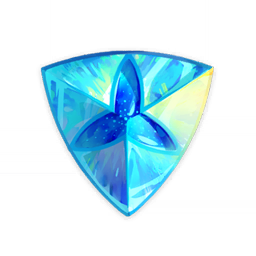
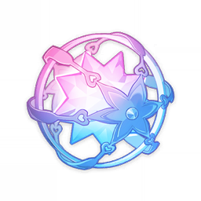
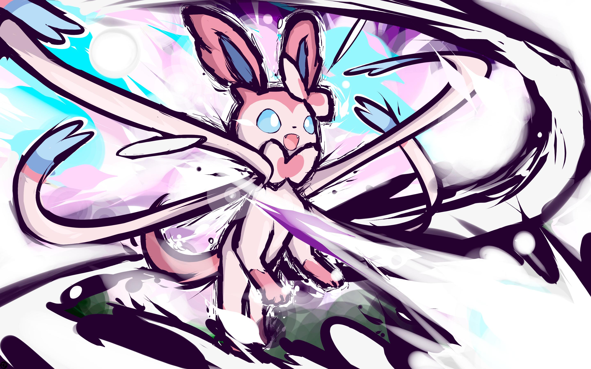
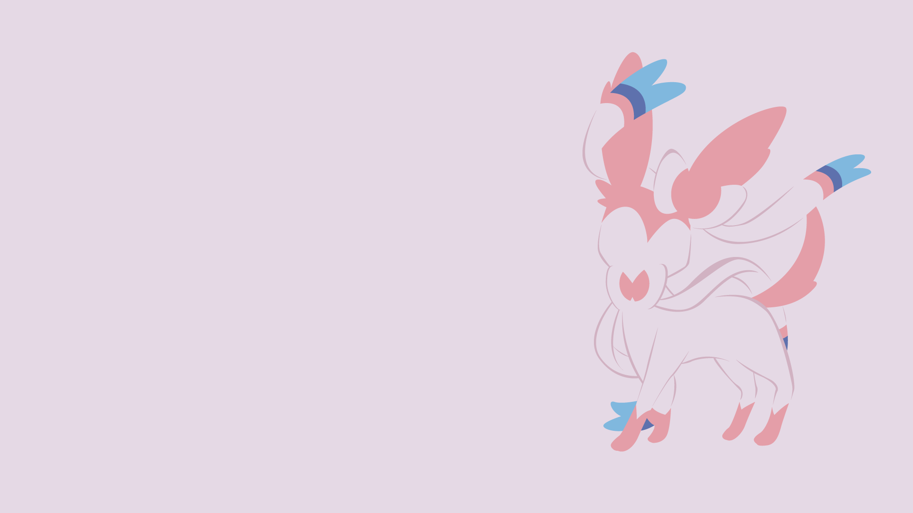
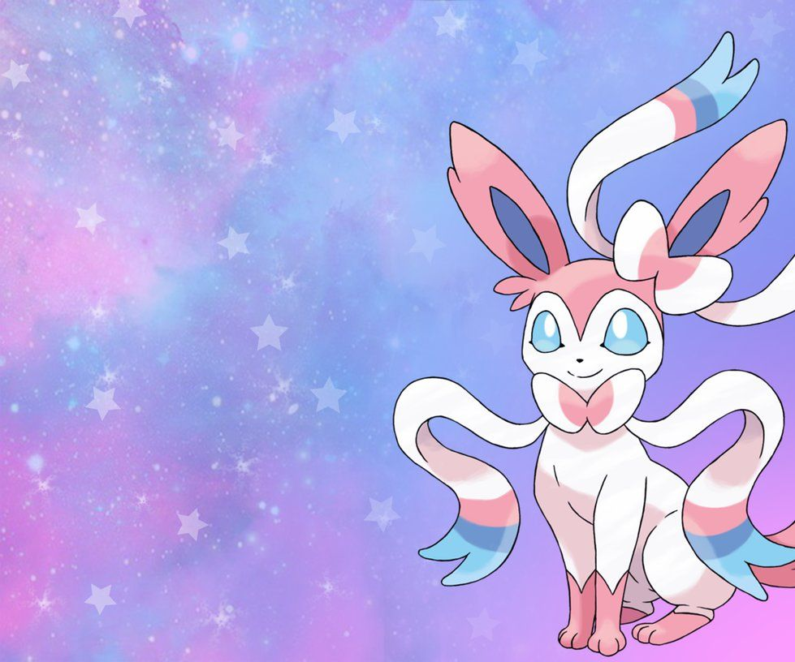

Parceiros



Sylveon's ribbon-like feelers emit a soothing aura that erases any sense of hostility, enabling it to stop fights. When hunting, it swirls its feelers as a distraction while the aura weakens feelings of hostility in its prey, then pounces on the victim. It will also wrap its feelers around its Trainer's arm as they walk together, which allows it to read their feelings.
Sylveon's ribbon-like feelers emit a soothing aura that erases any sense of hostility, enabling it to stop fights. When hunting, it swirls its feelers as a distraction while the aura weakens feelings of hostility in its prey, then pounces on the victim. It will also wrap its feelers around its Trainer's arm as they walk together, which allows it to read their feelings.
Sylveon's ribbon-like feelers emit a soothing aura that erases any sense of hostility, enabling it to stop fights. When hunting, it swirls its feelers as a distraction while the aura weakens feelings of hostility in its prey, then pounces on the victim. It will also wrap its feelers around its Trainer's arm as they walk together, which allows it to read their feelings.
">